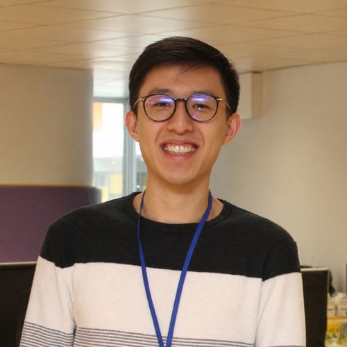

Ph.D. Candidate, Computer Science
Manning College of Information and Computer Sciences
University of Massachusetts Amherst
Email: kwanhong [at] cs.umass.edu
I am a Ph.D. candidate in Computer Science at the University of Massachusetts Amherst, advised by Prof. Prashant Shenoy. My research interests lie broadly in distributed systems and systems for machine learning, with a current focus on optimizing AI systems across the device–edge–cloud continuum. Prior to UMass, I received my B.Sc. in Computer Science from Hong Kong Baptist University, advised by Prof. Byron Choi. I have also completed two summer research internships at Adobe and will return for a third in Summer 2026.
Ph.D. in Computer Science, University of Massachusetts Amherst, expected September 2026. Advisor: Prof. Prashant Shenoy.
B.Sc. in Computer Science, Hong Kong Baptist University, 2018. Advisor: Prof. Byron Choi.
My research lies broadly in distributed systems and systems for machine learning, with a current emphasis on AI systems across the device–edge–cloud continuum. I design, build, and optimize systems and resource management techniques that deliver predictable low-latency performance, covering both average-case and tail-latency behavior, for emerging AI applications. I leverage principled approaches such as analytic modeling, queueing theory, and optimization to understand system behavior and inform system design and orchestration.
A full list of publications is on the Publications page; see also my Google Scholar.